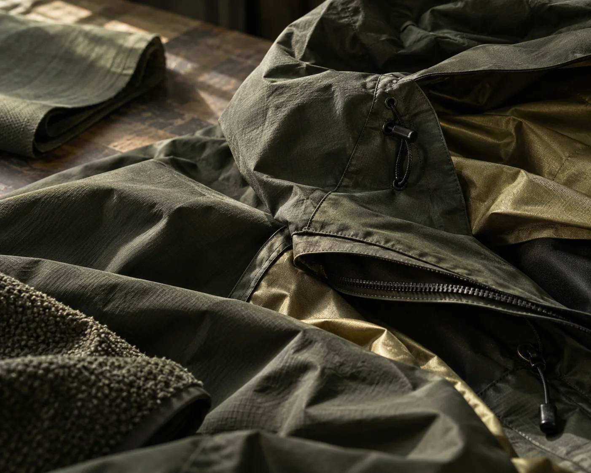

01 / FIELD NOTES

02 / MATERIAL & MEMORYMake it
meaningful
meaningful
01 / MY APPROACH從現場出發，
從現場出發，
讓故事有形狀。
THE FIRST STORY / SATSUYUKISELECTED WORK / 01—03沿著不同路徑，
沿著不同路徑，
做同一件事。
從雪地到網站，再到鏡頭前後的內容實作。